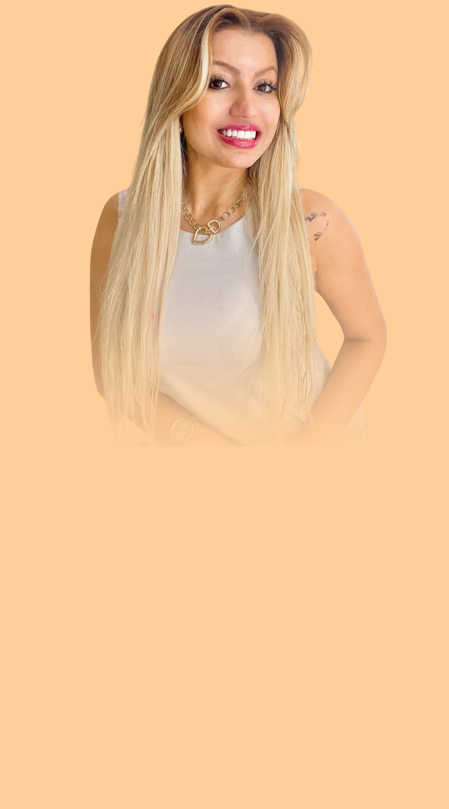
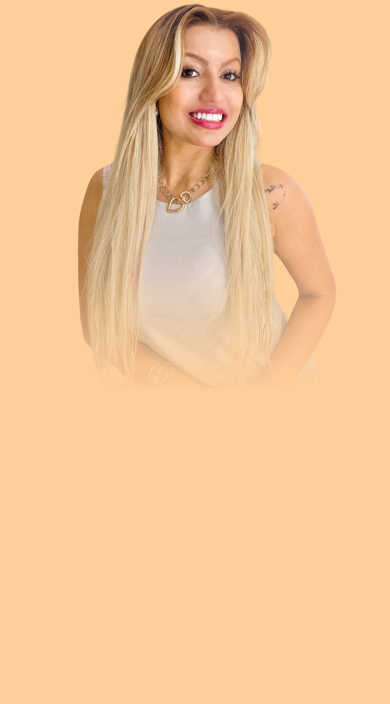

PSICÓLOGA COGNITIVO
COMPORTAMENTAL
CRP: 01/2345
É possível ser feliz e viver uma
vida com amor e significado!

Olá! Sou Susan Elise,
Psicóloga formada pela Universidade Federal de Roraima. Sou apaixonada pela minha profissão e amo poder fazer a diferença na vida de meus pacientes.
Sou Pós-Graduanda em Neuropsicologia, pelo Hospital Israelita Albert Einstein
e possuo Formação em Desenvolvimento Humano na Infância e Adolescência, pela USP, Universidade Federal de São Paulo. A terapia online que ofereço vai além das fronteiras geográficas, atendendo pacientes em todo o Brasil e brasileiros no exterior.
Entendo que a busca por terapia muitas vezes surge diante de um sofrimento que nos paralisa, comumente fazendo com que acreditemos que não há motivos para termos esperanças sobre a possibilidade de melhoria. Nesse sentido, a minha missão é proporcionar um espaço ético, sigiloso, humanizado,
acolhedor e personalizado para cada demanda e paciente. Estou comprometida em guiá-lo em sua jornada de autoconhecimento, transformação emocional e fomento da sua saúde mental, com ferramentas totalmente baseadas em estudos científicos, com comprovação de suas eficácias.
Como posso te ajudar?
1. Ansiedade
2. Depressão
3. TDAH
4. Autoestima
5. Disturibios emocionais
6. Compulsão alimentar